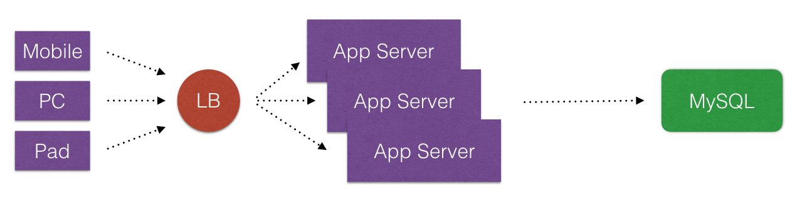
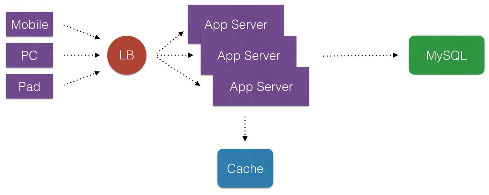
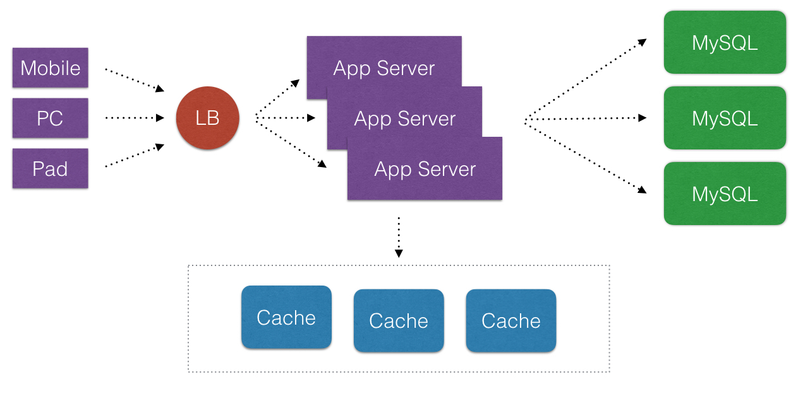
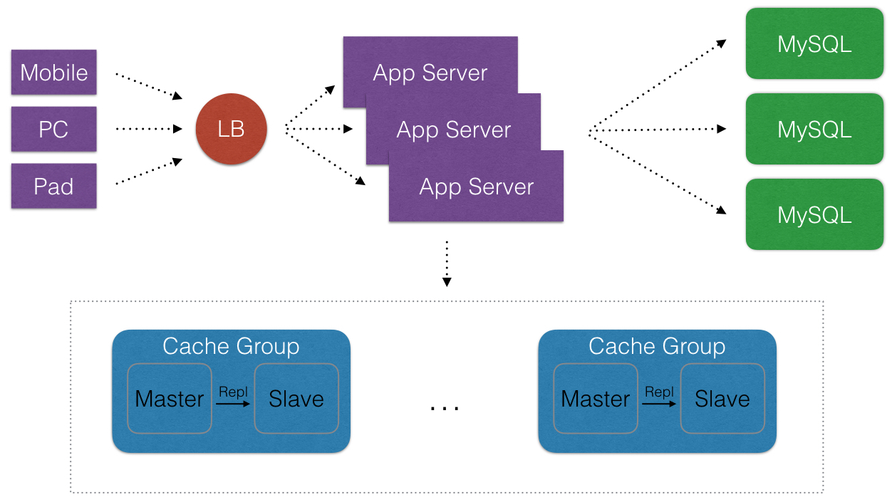

- AQS 万字图文全面解析.md.html
- Docker 镜像构建原理及源码分析.md.html
- ElasticSearch 小白从入门到精通.md.html
- JVM CPU Profiler技术原理及源码深度解析.md.html
- JVM 垃圾收集器.md.html
- JVM 面试的 30 个知识点.md.html
- Java IO 体系、线程模型大总结.md.html
- Java NIO浅析.md.html
- Java 面试题集锦（网络篇）.md.html
- Java-直接内存 DirectMemory 详解.md.html
- Java中9种常见的CMS GC问题分析与解决（上）.md.html
- Java中9种常见的CMS GC问题分析与解决（下）.md.html
- Java中的SPI.md.html
- Java中的ThreadLocal.md.html
- Java线程池实现原理及其在美团业务中的实践.md.html
- Java魔法类：Unsafe应用解析.md.html
- Kafka 源码阅读笔记.md.html
- Kafka、ActiveMQ、RabbitMQ、RocketMQ 区别以及高可用原理.md.html
- MySQL · 引擎特性 · InnoDB Buffer Pool.md.html
- MySQL · 引擎特性 · InnoDB IO子系统.md.html
- MySQL · 引擎特性 · InnoDB 事务系统.md.html
- MySQL · 引擎特性 · InnoDB 同步机制.md.html
- MySQL · 引擎特性 · InnoDB 数据页解析.md.html
- MySQL · 引擎特性 · InnoDB崩溃恢复.md.html
- MySQL · 引擎特性 · 临时表那些事儿.md.html
- MySQL 主从复制 半同步复制.md.html
- MySQL 主从复制 基于GTID复制.md.html
- MySQL 主从复制.md.html
- MySQL 事务日志(redo log和undo log).md.html
- MySQL 亿级别数据迁移实战代码分享.md.html
- MySQL 从一条数据说起-InnoDB行存储数据结构.md.html
- MySQL 地基基础：事务和锁的面纱.md.html
- MySQL 地基基础：数据字典.md.html
- MySQL 地基基础：数据库字符集.md.html
- MySQL 性能优化：碎片整理.md.html
- MySQL 故障诊断：一个 ALTER TALBE 执行了很久，你慌不慌？.md.html
- MySQL 故障诊断：如何在日志中轻松定位大事务.md.html
- MySQL 故障诊断：教你快速定位加锁的 SQL.md.html
- MySQL 日志详解.md.html
- MySQL 的半同步是什么？.md.html
- MySQL中的事务和MVCC.md.html
- MySQL事务_事务隔离级别详解.md.html
- MySQL优化：优化 select count().md.html
- MySQL共享锁、排他锁、悲观锁、乐观锁.md.html
- MySQL的MVCC（多版本并发控制）.md.html
- QingStor 对象存储架构设计及最佳实践.md.html
- RocketMQ 面试题集锦.md.html
- SnowFlake 雪花算法生成分布式 ID.md.html
- Spring Boot 2.x 结合 k8s 实现分布式微服务架构.md.html
- Spring Boot 教程：如何开发一个 starter.md.html
- Spring MVC 原理.md.html
- Spring MyBatis和Spring整合的奥秘.md.html
- Spring 帮助你更好的理解Spring循环依赖.md.html
- Spring 循环依赖及解决方式.md.html
- Spring中眼花缭乱的BeanDefinition.md.html
- Vert.x 基础入门.md.html
- eBay 的 Elasticsearch 性能调优实践.md.html
- 不可不说的Java“锁”事.md.html
- 互联网并发限流实战.md.html
- 从ReentrantLock的实现看AQS的原理及应用.md.html
- 从SpringCloud开始，聊微服务架构.md.html
- 全面了解 JDK 线程池实现原理.md.html
- 分布式一致性理论与算法.md.html
- 分布式一致性算法 Raft.md.html
- 分布式唯一 ID 解析.md.html
- 分布式链路追踪：集群管理设计.md.html
- 动态代理种类及原理，你知道多少？.md.html
- 响应式架构与 RxJava 在有赞零售的实践.md.html
- 大数据算法——布隆过滤器.md.html
- 如何优雅地记录操作日志？.md.html
- 如何设计一个亿级消息量的 IM 系统.md.html
- 异步网络模型.md.html
- 当我们在讨论CQRS时，我们在讨论些神马？.md.html
- 彻底理解 MySQL 的索引机制.md.html
- 最全的 116 道 Redis 面试题解答.md.html
- 有赞权限系统(SAM).md.html
- 有赞零售中台建设方法的探索与实践.md.html
- 服务注册与发现原理剖析（Eureka、Zookeeper、Nacos）.md.html
- 深入浅出Cache.md.html
- 深入理解 MySQL 底层实现.md.html
- 漫画讲解 git rebase VS git merge.md.html
- 生成浏览器唯一稳定 ID 的探索.md.html
- 缓存 如何保证缓存与数据库的双写一致性？.md.html
- 网易严选怎么做全链路监控的？.md.html
- 美团万亿级 KV 存储架构与实践.md.html
- 美团点评Kubernetes集群管理实践.md.html
- 美团百亿规模API网关服务Shepherd的设计与实现.md.html
- 解读《阿里巴巴 Java 开发手册》背后的思考.md.html
- 认识 MySQL 和 Redis 的数据一致性问题.md.html
- 进阶：Dockerfile 高阶使用指南及镜像优化.md.html
- 铁总在用的高性能分布式缓存计算框架 Geode.md.html
- 阿里云PolarDB及其共享存储PolarFS技术实现分析（上）.md.html
- 阿里云PolarDB及其共享存储PolarFS技术实现分析（下）.md.html
- 面试最常被问的 Java 后端题.md.html
- 领域驱动设计在互联网业务开发中的实践.md.html
- 领域驱动设计的菱形对称架构.md.html
- 高效构建 Docker 镜像的最佳实践.md.html
深入浅出Cache
① 什么是Cache? Cache的目标?
- 在说这个之前我们先看下典型Web 2.0的一些架构演变(这里不用”演进”). 从简单的到复杂的通用架构.
- 首先, 诚然说Cache在互联网公司里,是一个好东西. Cache化,可以显著地提高应用程序的性能和便于提供应用程序的伸缩性(可以消除不必要请求落到外在的不频繁改变数据的DataSource上). 那么Cache化目的非常明显, 就是有且只有一个: 提高应用程序的性能.
- 再者, Cache化, 以in-memory为组织形式, 作为外部的持久化系统的数据的副本(可能数据结构不同), 仅仅为了提高性能. 那么Cache化的数据应当是短暂停留在Distributed Cache中 — 它们可能(可以)随时的消失(即使断电不保证立马就有数据-这一点类似CPU的L1/L2 Cache), 那么应用在用到Cache时候仅当Cache系统可用时候使用不应当完全依赖于Cache数据 — 就是说在Distributed Cache中个别的Cache实例失效,那么DataSource(持久化)可以临时性完成数据被访问的工作.
- 最后, 我们可以假定如果各种DataSource自有的系统性能非常高, 那么Cache所能解决的领域就变得非常的少.
② Caching住哪些内容?
- 能够提高系统整体命中率+提高性能的一切数据, 均放入Distributed Cache是非常合适的.
③ 我们想要的Cache产品
从上面的目标和定位推理看一款Cache产品应当满足以下需求(不仅仅有):
- 极致的性能, 表现在极低的延迟, 甚至从ms到us响应
- 极高的吞吐量, 可以应对大促/大流量业务场景
- 良好的扩展性, 方便扩容, 具备基本的分布式特点而不是单机
- 在扩容/缩容的时候, 已有的节点影响(发生迁移)的成本尽可能低
- 节点的基本的高可用(或者部署上可以没有)
- 基本的监控, 进程级别和实例级别等都有关键性的指标
④ Cache使用方式
说到Cache使用方式, 必不可少的会与数据库(甚至是具备ACID的RDBMS)或者普通存储系统对比.
- 简单的而言. 即使Cache有了持久化, 但市面上的Cache产品(Redis还是其它)都不具备良好的高可靠的持久化特性(无论是RDB还是AOF, 还是AOF+RDB), 持久化的可靠性都不如MySQL. 注:这里不深入Redis原理和源码和OS文件存储内容.
而使用方式有以下三种:
- 懒汉式(读时触发)
- 饥饿式(写时触发)
- 定期刷新
懒汉式(读时触发)
这是比较多的场景会使用到. 就是先查询第一数据源里的数据, 然后把相关的数据写入Cache. 以下部分代码:
Java (Laziness)
Jedis cache = new Jedis();
String inCache = cache.get("100");
if (null == inCache) {
JdbcTemplate jdbcTemplate = new JdbcTemplate();
User user = jdbcTemplate.queryForObject("SELECT UserName, Salary FROM User WHERE ID = 100",
new RowMapper<User>() {
@Override
public User mapRow(ResultSet rs, int rowNum) throws SQLException {
return null;
}
});
if (null != user) {
cache.set(String.valueOf(user.getId()), user.toString()); // 可以异步
}
cache.close();
}
好处和坏处:
- 不太好的是: 大多数的数据可能不再被高频度访问. 如果第一次访问不命中就有另外多余的副作用.
- 比较好的是: 保证数据在Cache里. 适用于大多数的场景.
饥饿式(写时触发)
Java (Impatience)
User user = new User();
JdbcTemplate jdbcTemplate = new JdbcTemplate();
int affectedRows = jdbcTemplate.update("UPDATE User SET Phone = ? WHERE ID = 100 LIMIT 1",
new Object[] { 198 });
cache.set(String.valueOf(user.getId()), user.toString()); // 可以异步
好处和坏处:
- 比较好的是: 这种写比例不高数据, 能保证数据比较新.
分析下重要的几条, 关于"懒汉式"和"饥饿式":
- 饥饿式总保持数据较新
- 分别存在了写失误/读失误
- 单一方式的使用都将使Miss概率增加
以上两种各有优缺点, 因此我们将两种结合一下(追加一个TTL):
Java (Combo : Laziness && Impatience)
cache.setex(String.valueOf(user.getId()), 300, user.toString()); // TTL, 可以异步
定期刷新
常见场景, 有如下几点
- 周期性的跑数据的任务
- 适合Top-N列表数据
- 适合不要求绝对实时性数据
- …
⑤ 对于总体系统的提高
以下看看命中率如何影响总体系统? 为了简化公式计算, 以下做一些假定.
- 场景一: 我们假定, HTTP QPS 有 10,000, 没有使用Cache(变相地假定Miss100%), RDBMS是读 3 ms/query , Cache是 1 ms/query. 那么理想下10,000个Query总耗时: 3 ms/query * 10,000query = 30,000 ms 如果我们用了以上2者结合的方式 假定是 90% 命中率, 那么理想下10,000个Query总耗时: 3 ms/query * 1,000query + 1 ms/query * 9,000query = 12,000 ms. 假定是 70% 命中率, 那么理想下10,000个Query总耗时: 3 ms/query * 3,000 query + 1 ms/query * 7,000query = 16,000 ms.
- 场景二: 我们假定, HTTP QPS 有 10,000, 没有使用Cache(变相地假定Miss100%), RDBMS是 读:写 是 8 : 2 . 读 3 ms/query, 写 5 ms / query, Cache是 1 ms/query. 那么理想下10,000个Query总耗时: 3 ms / query * 8,000 query + 5 ms / query * 2000 query = 34,000 ms . 如果我们用了以上2者结合的方式, 假定新数据写入后才有读的操作, 那么命中率可能为100%, 那么理想下10,000个Query总耗时: 1 ms/query * 8,000query + 5 ms/query * 2000 query = 18,000 ms. 差一些命中率可能为90%, 那么理想下10,000个Query总耗时: 1 ms/query * ( 8,000query90%) + 3 ms/query * ( 8,000query10%) + 5 ms/query * 2000 query = 19,600 ms. 再差一些命中率可能为70%, 那么理想下10,000个Query总耗时: 1 ms/query * ( 8,000query70%) + 3 ms/query * ( 8,000query30%) + 5 ms/query * 2000 query = 22,800 ms. 可以看到 22,800ms / 19,600ms = 117%, 那么有17%的性能损失.
以下看看Cache高可用下如何影响总体系统? 为了简化公式计算. 我们假定Cache依然是提高性能使用, 就是说数据源不是Cache层的.
- 场景一: 如上Web2.0架构里, 访问Cache一层, 和访问MySQL一层. 在压力可接受的情况下. 假定Cache集群可用性是99%, MySQL可用性是99%. 即使集群里挂了一个Cache实例, 那么总体系统的可用性: ( 1 - (1-99%)(1-99%) ) = 99.99% .假定Cache集群可用性是99%, 共有10个实例. MySQL可用性是98%, MySQL可以承受3个Cache实例带来的压力, 即使集群里挂了两个Cache实例, 那么总体系统的可用性: ( 1 - (1-99%)(1-99%)*(1-98%) ) = 99.9998%
- 场景二: 访问Cache一层, 但因为某种因素不再访问MySQL一层. 那么总体系统的可用性: ( 1 - 1% - 1% ) = 98%
- 场景三: 不算Web2.0的架构里, 访问Cache一层, 和访问MySQL一层, 和不访问MySQL一层, 那么总体系统的可用性是多少呢? — 答案留给读者 对比场景一和场景二, 在增加正常的系统处理下(就是多几行代码), 我们就可以提高极大的总体系统的可用性.
- (这里声明下: 任何一个系统,不可能有100%的可用性, 包括Google也一样, 我们能做的就是多做几个9的可用性)
⑥ 关于Sharding
算法有以下常见的两种比较:
- Hashing
- Consistent Hashing (using virtual nodes)
- servers = [‘cache-server1.yuozan.com:6379’, ‘cache-server2.youzan.com:6379’];
- serverindex = hash(key) % servers.length; server = servers[serverindex;
算法描述
- 第一种Hashing方式, 一旦需要扩容一个或者下线一个, 那么会导致大量的keys重分配: = ( oldnodecount/newnodecount ), 就是说3台server扩充到4台server时候, 3/4 = 75%的keys都受到影响.
- 第二种Consistent Hashing方式, 一旦需要扩容一个或者下线一个, 那么仅有将近( 1 - (oldnodecount/newnodecount) ) 比例的keys受到影响, 就是说3台server扩充到4台server时候, (1 - 3/4) = 25%的keys都受到影响. 这样相比上一种受到的影响降低了50%. 这将是更好的方式.
Consistent Hashing简化算法流程的描述:
- 将keys和servers都进行看成一个ring(常被称为 continuum)
- 将keys和servers的hash值分隔成多个的slots
- 将servers的virtual nodes按照顺时针顺序分别映射到slots上
- 将key进行hash按照顺时针顺序查找最近的一个virtual node
⑦ Cache痛点和关注点
公司以前业务刚起来, 用的Redis当作Cache, 大家知道Redis是单机版本-没有Sharding. 由于业务起来, 单机版本对于某个业务来说, 一旦扩容或是挂了那个业务的所有流量都挂了, 当时只做到了垂直分片(Vertical Partition), 而为了快速解决这一问题, 我们必须引入DistributedCache, 希望它简单的好(因为我们只用来做Cache), 甚至目标都不想让Redis做持久化数据.
⑧ 我们用的Cache的产品
2015年为了业务技术改造, 并能快速的上线. 我们调查了Twemproxy Codis. 考虑到我们技术投入. 同时对Codis做了相应的测试, 最终使用Codis作为Cache的产品来使用. (性能可以看看Codis官方的对比) 另外我们结合自己PHP的业务需要, 做了PHP和本地部署Proxy的方式来基准测试. Codis提供的扩容时的迁移采用了向新老的Server双写的模式, 在迁移数据到达了100%的量时候会有一定的极短的锁时间(这有优势也有劣势), 我们和Redis官方一样不建议开启AOF. 从目前一年多的使用和运维经验看, Codis已经满足我们当下的业务需求. 对于双11等类似的大促峰值, 我们可以看到Codis单纯当作Cache来使用的可靠性是比MySQL高的, 也就是说: 如果假定在高峰值下, 即便是Cache会挂了, 并将流量打到了MySQL集群上, 那么对于外网的业务而言系统一样是不可用的. 那么只要保证不出现Cache整个集群挂了-只要保证一两个实例(极点比例)挂了, 那么流量分散到MySQL集群上后大促业务依旧保持可用.
⑨ 我们的一些实践
- 着重在Codis-Server上的Redis配置, 在运维上尽可能提高Server一侧的性能: 绑定单核至每个Redis进程 + 去除持久化(目标: 无Slave节点) + 每个Server进程实例的内存大小尽可能的小(控制在2.5GiB以内)
- 针对PHP-FPM模式下, 用Codis-Proxy当做PHP的LocalAgent直接部署同机上: 提高稳定性 + 降低延迟(Latency)
- 我们针对Namespace多业务共用集群问题: 按照约定取不用的业务/应用名称. 另外共用集群在sharding情况下带来的实例级别的复用带来的命中率变化和sharding均衡性变化, 感兴趣的读者可以自行计算下